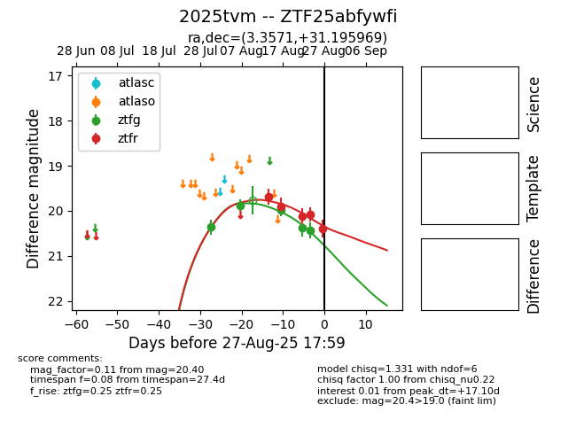

Target 2025tvm at 2025-08-21 09:16, see:
FINK: fink-portal.org/ZTF25abfywfi
Lasair: lasair-ztf.lsst.ac.uk/objects/ZTF25abfywfi
ALeRCE: alerce.online/object/ZTF25abfywfi
TNS: wis-tns.org/object/2025tvm
YSE: ziggy.ucolick.org/yse/transient_detail/2025tvm
alt names
ZTF25abfywfi (ztf,alerce)
2025tvm (tns,yse)
coordinates:
equatorial (ra, dec) = (3.3572,+31.19596)
galactic (l, b) = (113.4519,-30.97515)
photometry
last ztfg=19.98, ztfr=19.90
4 ztfg, 4 ztfr detections
